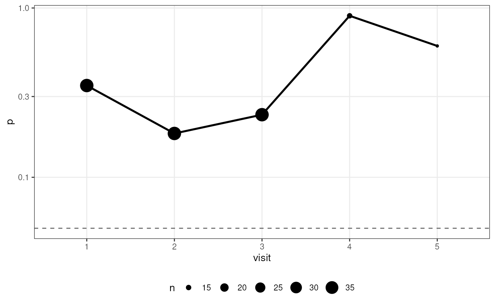
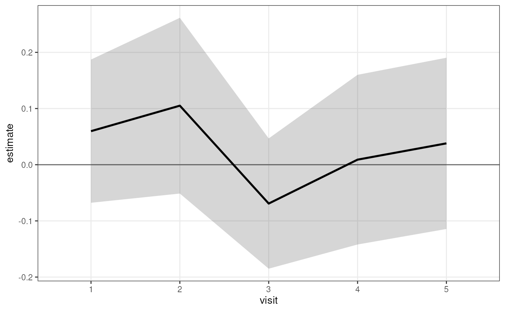

plotTimeEffect() draws a model estimate at each time with its
interval, against a reference line at zero: a difference between groups
at each time point, a time by group interaction, or a GAM difference
curve.
Usage
plotTimeEffect(x, ...)
# S4 method for class 'SummarizedExperiment'
plotTimeEffect(x, name, time.col, group.by = NULL, ...)
# S4 method for class 'data.frame'
plotTimeEffect(
x,
time.col,
group.by = NULL,
null = NULL,
p.col = NULL,
threshold = 0.05,
size.by = NULL,
...
)
# S4 method for class 'MultiAssayExperiment'
plotTimeEffect(x, ..., experiment = 1L)Arguments
- x
a
SummarizedExperimentobject with the results inmetadata(x), or adata.frameof results with the columnstime.colandestimate, and optionallylowerandupperfor an interval.- ...
additional arguments passed to
geom_line.- name
Character scalar. Specifies the entry ofmetadata(x)holding the results.- time.col
Character scalar. Specifies the column of the results that contains the times: numeric,Date,POSIXctor a factor of visits.- group.by
Character scalar. Specifies the column of the results that splits the estimates into curves, such as the contrast or the feature. (Default:NULL)- null
data.frame. Effects estimated under the null hypothesis, such as after permuting the group labels, with the columnspermutation,time.colandestimate, and optionallygroup.by. Each permutation is drawn as a thin translucent line behind the observed effect. (Default:NULL)- p.col
Character scalar. Specifies the column of p-values to draw on a log scale instead of the effect, with a dashed line atthreshold. (Default:NULL)- threshold
Numeric scalar. Significance level forp.col. (Default:0.05)- size.by
Character scalar. Specifies the column that sets the size of a point at each time, such as the number of subjects. (Default:NULL)- experiment
Character scalarorinteger scalar. For aMultiAssayExperiment, the experiment to plot; its samples get thecolDataofx. (Default:1L)
Details
The y axis shows the effect, not the value of a variable; to draw fitted
values over the data, use the fit argument of
plotTrend.
The null curves and the p-value curve with points sized by the
number of subjects follow the plots of SplinectomeR (Shields-Cutler et
al. 2018, doi:10.3389/fmicb.2018.00785, Fig. 2).
Examples
data("hitchip1006", package = "miaTime")
tse <- hitchip1006
tse <- tse[, tse$subject %in% names(which(table(tse$subject) >= 3))]
tse$visit <- factor(ave(tse$time, tse$subject, FUN = rank))
# Difference in diversity between men and women at each visit, from a
# linear model per visit; each subject has one sample per visit
sex_effect <- function(cd) {
do.call(rbind, lapply(split(cd, cd$visit), function(d) {
model <- lm(diversity ~ sex, data = d)
ci <- confint(model)["sexmale", ]
data.frame(visit = d$visit[1L],
estimate = coef(model)[["sexmale"]],
lower = ci[[1L]], upper = ci[[2L]],
p = summary(model)$coefficients["sexmale", 4L], n = nrow(d))
}))
}
cd <- as.data.frame(SummarizedExperiment::colData(tse))
effect <- sex_effect(cd)
plotTimeEffect(effect, time.col = "visit")
 # Against the effects after permuting sex within each visit 50 times
set.seed(1)
null <- do.call(rbind, lapply(seq_len(50L), function(i) {
cd$sex <- ave(as.character(cd$sex), cd$visit, FUN = sample)
data.frame(permutation = i, sex_effect(cd))
}))
plotTimeEffect(effect, time.col = "visit", null = null)
# Against the effects after permuting sex within each visit 50 times
set.seed(1)
null <- do.call(rbind, lapply(seq_len(50L), function(i) {
cd$sex <- ave(as.character(cd$sex), cd$visit, FUN = sample)
data.frame(permutation = i, sex_effect(cd))
}))
plotTimeEffect(effect, time.col = "visit", null = null)
 # p-values, with points sized by the number of subjects
plotTimeEffect(effect, time.col = "visit", p.col = "p", size.by = "n")
# p-values, with points sized by the number of subjects
plotTimeEffect(effect, time.col = "visit", p.col = "p", size.by = "n")

# The same results stored in metadata(tse)
S4Vectors::metadata(tse)$sex_effect <- effect
plotTimeEffect(tse, name = "sex_effect", time.col = "visit")
